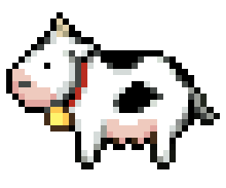

welcome to my vegan page! i've been vegan since august 2016 and feel very passionately that it's one of the best things you can do to help animals, the environment, and your health. here you can find recipes, resources on going vegan, a toybox for pixels of farm animals, and more.
background credit / sunflower graphics credit / bee bullet point credit